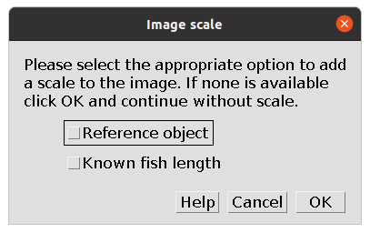
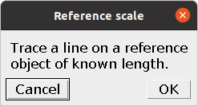
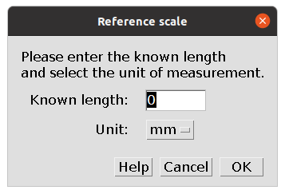
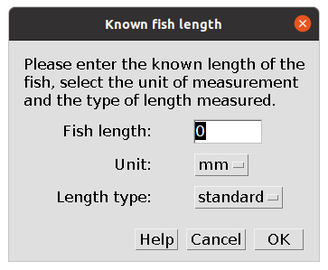
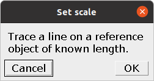
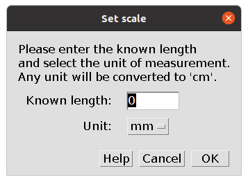

3 Image scale
The first step of the Main Traits and Gut Traits analyses is to set the scale for the image. While for the Main Traits analysis this is optional, it is required for the Gut Traits analysis.
3.1 Main Traits scale
When starting the Main Traits analysis the following dialog box appears.

There are three options:
- Add a scale through a reference object in the image.
- Add a scale through the known length of the fish.
- Do not add a scale to the image.
Check the box of the appropriate option to add a scale, or leave the boxes empty and click OK to continue without adding a scale. If both options are selected, a reference object will be used.
Scale through reference object
After selecting Reference object the following dialog box appears.

Trace a straight line on a reference object and click OK. The next dialog box appears.

Enter the known length of the traced line and select the unit from the drop-down list. Three options are available (mm, cm, and inch), but any unit will then be converted to cm. The traced line will be stored in the ROI Manager as px.cm and then saved with all other ROIs. The scale of the image, in pixels/cm, will be saved in the results file within the column px.cm to allow converting the results, which are saved in pixels, to cm, if preferred.
Scale through fish length
After selecting Known fish length the following dialog box appears.

Enter the known length of the fish, select the unit from the drop-down list, and select the type of length, either standard length or total length, from the drop-down list. As for the reference object, the scale of the image, in pixels/cm, will be saved in the results file within the column px.cm to allow converting the results, which are saved in pixels, to cm, if preferred.
3.2 Gut Traits scale
The procedure to add a scale to the Gut Traits analysis is the same as using a reference scale in the Main Traits analysis.
When starting the Gut Traits analysis the following dialog box appears.

Trace a straight line on a reference object and click OK.
For the Gut Traits analysis the reference object could also be the fish itself if it is in the image and its length (standard, fork, or total) is known. In this case trace a line over the fish to select the appropriate length.
The following dialog box appears.

Enter the known length of the traced line and select the unit from the drop-down list. Three options are available (mm, cm, and inch), but any unit will then be converted to cm. The traced line will be stored in the ROI Manager as px.cm and then saved with all other ROIs. The scale of the image, in pixels/cm, will be saved in the results file within the column px.cm to allow converting the results, which are saved in cm, to the original pixels, if preferred.